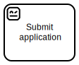

Exercise: PDF creation robot
This exercise has simpler process than the introduction, but a more complex robot. The goals is no less than create a Certificate of participation (PDF) with user submitted details.
{kind=link}
Re-use existing robot
Luckily, for this time, we have been delivered prepackaged robot  create-certificate.zip, and we only need to wire it up.

Open the robots folder, and save the robot package as it is there.
Done.
The Playground RCC integration is configured to find it from there.
Form for the details
Next up, is designing the form. We’ve been told that the robot requires three input variables:
name– full name of the participant as stringemail– email of the participant as stringachievements– list of achievements strings to print on the certificate
When the  user task form field variable names matches those of the upcoming robot task requirements, and no variables need to be returned back to process, no input or output mapping is technically required.
user task form field variable names matches those of the upcoming robot task requirements, and no variables need to be returned back to process, no input or output mapping is technically required.
{kind=link}
Beam it up and play

Once process with the user task form has been saved and deployed, everything should be ready. Just start the RCC integration, it will discover the robot automatin package, and process is now available to be completed at Zeebe Play.
{kind=link}
Resource summary
{kind=link}
create-certificate.bpmn
create-certificate.formcreate-certificate.json
create-certificate.zip